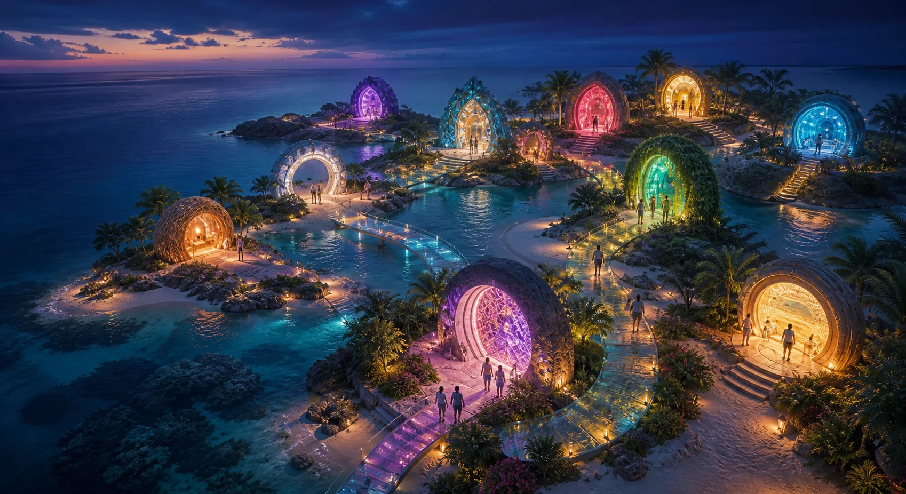
Every path through the node.
The complete page map, followed by the main public sources and related projects. Internal pages stay in this window; outside sources open separately.
Website pages
Main public sources
Local public project network
The complete focused set linked from this website. Every project opens in a separate tab.
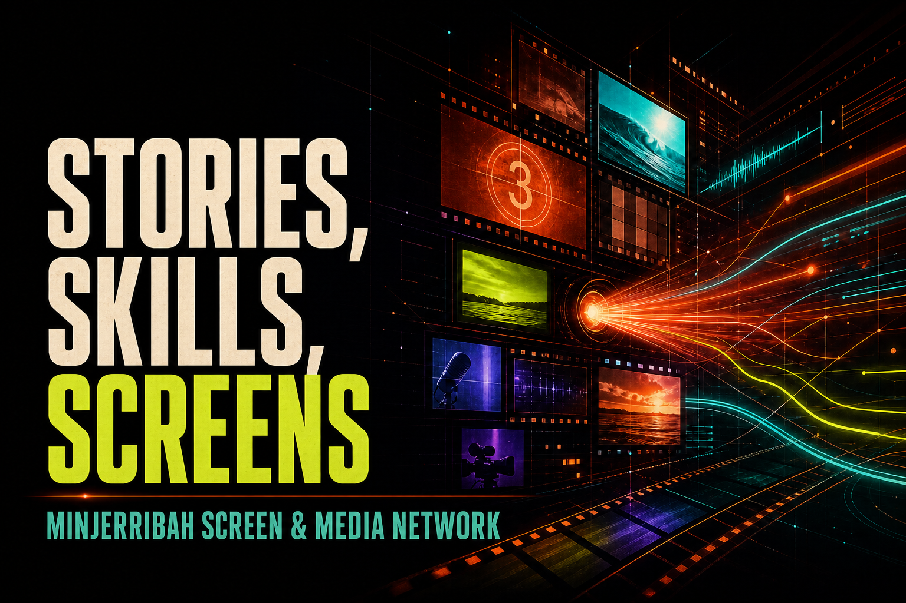
Staged public proposal Minjerribah Screen & Media NetworkLinks island stories, training, public screens, film, local media and practical production pathways through a staged collaboration proposal.Rack connectionLocal editing, transcription, archive search and screen rendering for island media.Open project ↗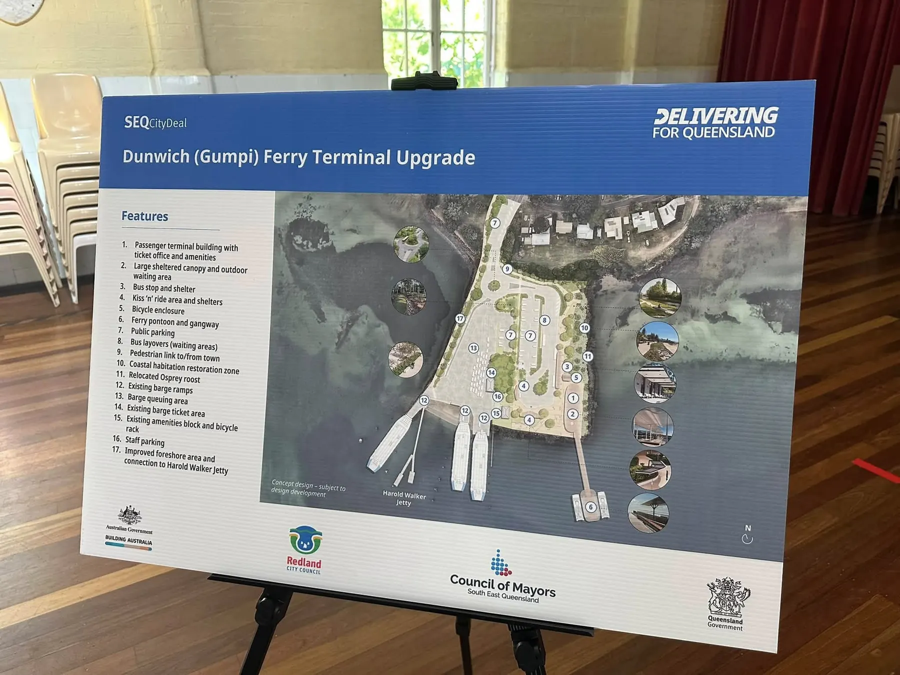
Working public prototype Dunwich (Gumpi) Ferry Terminal Open Data LabCombines 33 mapped 360 photo points, official project sources and simulation workflows around the Dunwich ferry terminal upgrade.Rack connectionPhotogrammetry, LiDAR processing and simulation for inspectable ferry gateway options.Open project ↗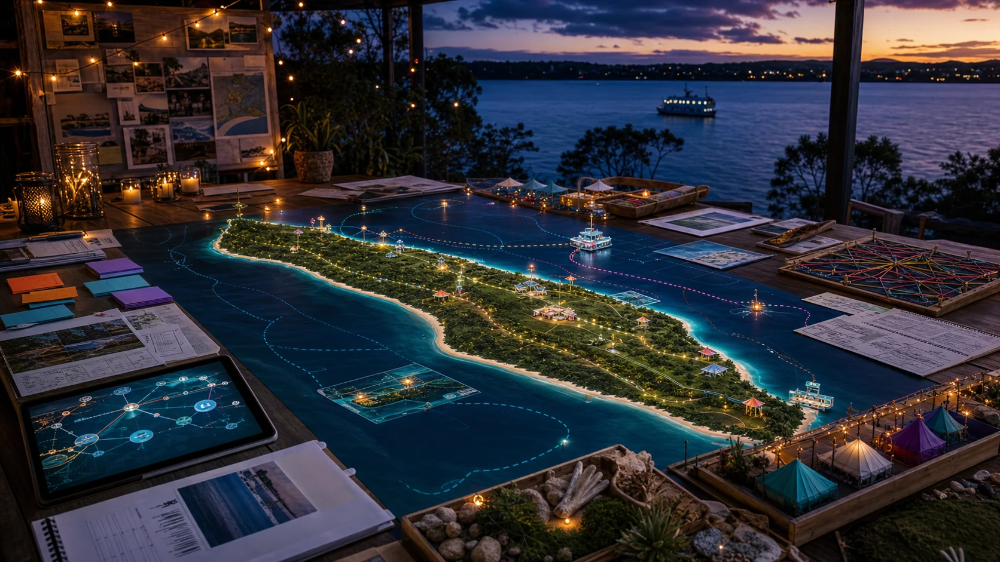
Working public tool Quandamooka Country Events EngineMaps events, places, suppliers and approval pathways, with Markdown builders spanning idea, run, simulation, notices and aftercare.Rack connectionLocal models index event records, draft run files and test logistics.Open project ↗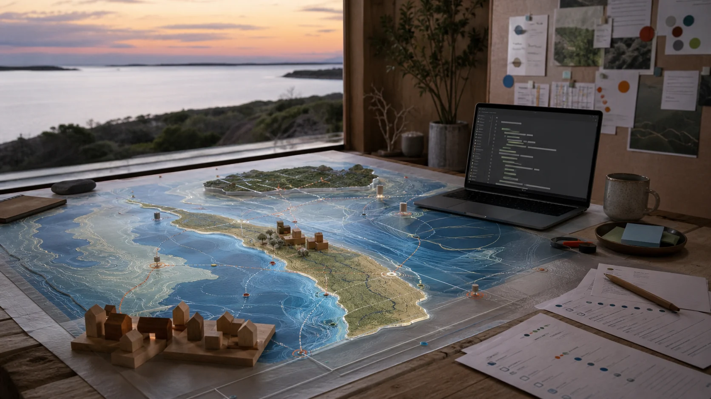
Working prompt builder Straddie Digital Twin BuildersTurns plain choices about rooms, places and bioregions into portable prompt packets for image, video, world building and simulation tools.Rack connectionGPU rendering develops selected prompt packets into reviewable local simulations.Open project ↗ Documentary planning site Grain by Grain DocumentaryMaps a 90 minute documentary from Dunwich infrastructure and material flows towards a seven generation civilisation story.Rack connectionLocal editing, transcription, visualisation and evidence retrieval support documentary production.Open project ↗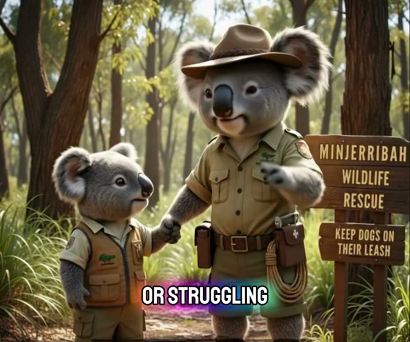
Working public map Minjerribah Wildlife RescueMaps wildlife rescue contacts, reporting guidance, island places and practical observation pathways in a community-oriented public tool.Rack connectionLocal mapping and image analysis support rescue coordination and field learning.Open project ↗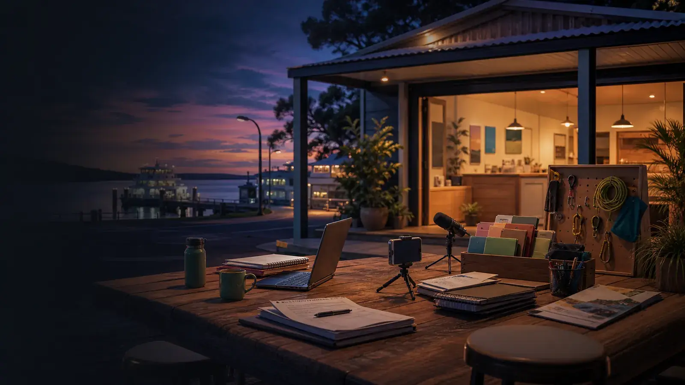
Public cooperative proposal Ready S.E.T. Co-op Trust HubConnects trust building, coworking, shared assets, local jobs, media and project pathways around the proposed Ready S.E.T. Co-op.Rack connectionShared compute supports training, media production, project administration and paid local workflows.Open project ↗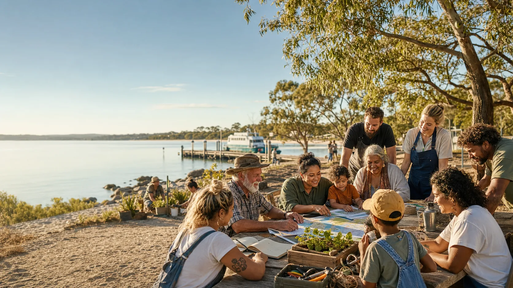
Public research doorway Moreton Bay Community Wealth and MutualsExplores community wealth funds, mutual protection, Indigenous data sovereignty, Native Title pathways and everyday choices across the Moreton Bay archipelago.Rack connectionLocal analysis models infrastructure value, risk and community benefit pathways.Open project ↗ Live 129 song universe
i C. infinity Music UniverseAn eight-collection public universe joining island life, music, science, spirituality, imagination, full lyrics and creative builders.Rack connectionTurns Dunwich stories, songs and visual worlds into local cultural production workloads.Open project ↗
Live 129 song universe
i C. infinity Music UniverseAn eight-collection public universe joining island life, music, science, spirituality, imagination, full lyrics and creative builders.Rack connectionTurns Dunwich stories, songs and visual worlds into local cultural production workloads.Open project ↗
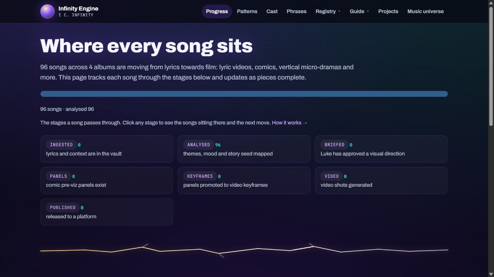
Live production dashboard Infinity EngineA model-agnostic pipeline moving songs through analysis, human direction, visual briefs, panels, keyframes, video and publication.Rack connectionUses rack compute for private orchestration, visual generation, review and reusable media pipelines.Open project ↗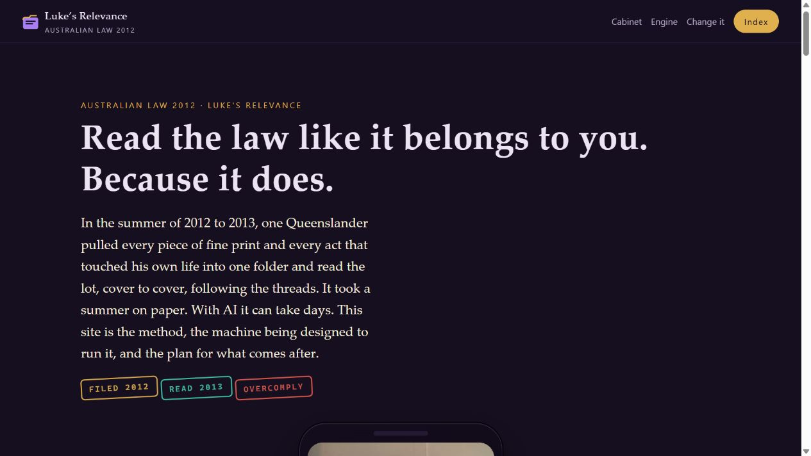
Public citation-first engine Australian Legal EngineAn offline Australian statute reader that parses Acts into provisions, indexes them locally, and returns exact quoted law with addresses.Rack connectionKeeps legal sources, indexes and question trails close to community projects.Open project ↗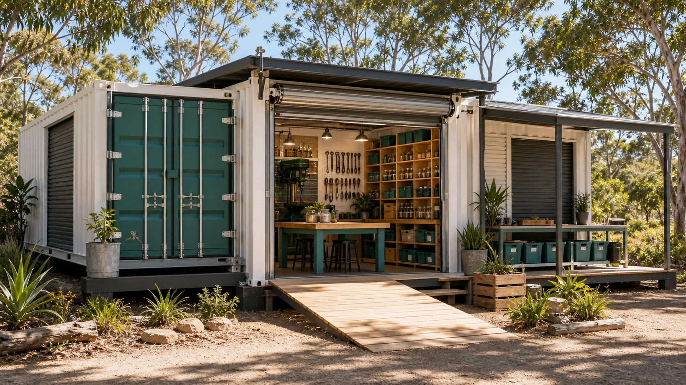
Public makerspace proposal Straddie Makerspace LabExplores a Dunwich workshop for making, repair, shared tools, recycled materials, local sand experiments and community learning.Rack connectionCAD workstations, local rendering and fabrication files support design, learning and repair.Open project ↗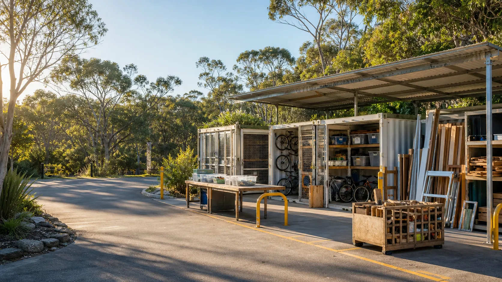
Circular learning workbench Straddie Tip Loop LabFollows useful items through offer, sorting, repair, parts, material stock, learning, partner processing and measured outcomes.Rack connectionVision models, inventory records and fabrication files support sorting, repair and remaking.Open project ↗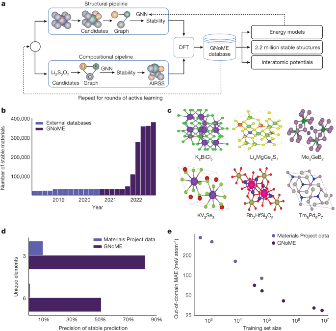
Interactive science atlas Extreme Matter AtlasExplores all 118 elements, record holders, predicted crystals, interactive lattices, metamaterials and frontier claims through questions anchored in measurement.Rack connectionGPU simulation explores crystal lattices, metamaterials and frontier material behaviour.Open project ↗ Frontier systems workbench
Sandworm Subterranean SystemsConnects subterranean transport, wildlife protection, resilient access, excavated materials, coastal systems, energy storage, community wealth and documentary trails.Rack connectionTransport simulation, material testing and systems modelling explore subterranean infrastructure scenarios.Open project ↗
Frontier systems workbench
Sandworm Subterranean SystemsConnects subterranean transport, wildlife protection, resilient access, excavated materials, coastal systems, energy storage, community wealth and documentary trails.Rack connectionTransport simulation, material testing and systems modelling explore subterranean infrastructure scenarios.Open project ↗
 Question led energy atlas
Straddie Clean Energy SuperpowerSurveys rooftop solar, heat and sand storage, hydrogen, water loops, power sharing, marine energy, novel wind and local wealth.Rack connectionEnergy modelling compares generation, storage, demand and island resilience scenarios.Open project ↗
Question led energy atlas
Straddie Clean Energy SuperpowerSurveys rooftop solar, heat and sand storage, hydrogen, water loops, power sharing, marine energy, novel wind and local wealth.Rack connectionEnergy modelling compares generation, storage, demand and island resilience scenarios.Open project ↗
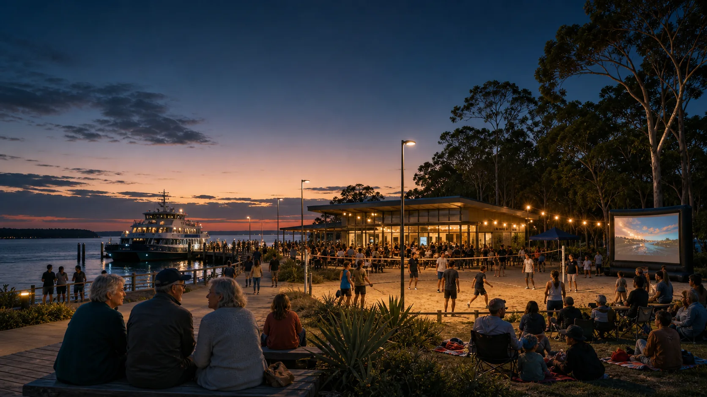
Public place proposal Ballow Road Sand & Screen HubBrings sand sport, outdoor cinema, night markets, youth crews, visitor information and festival energy into one Dunwich place proposal.Rack connectionSpatial modelling, media production and booking systems animate a shared public hub.Open project ↗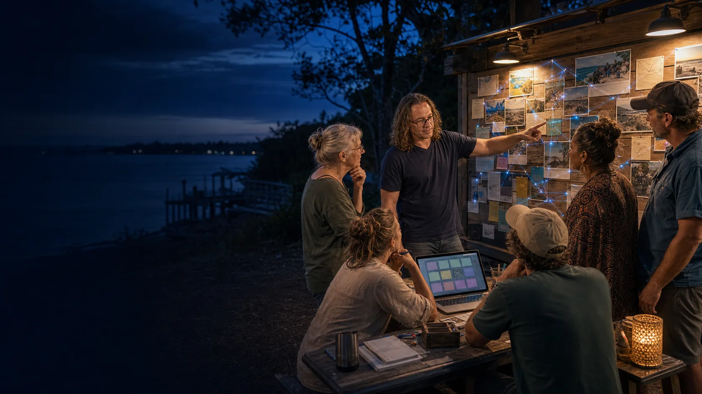
Wider project gatewayChoose your own adventure.Offers a choose your own adventure doorway across local tools, stories, infrastructure experiments and public project pages.
Open the Community Ledger ↗Project Atlas, Future of Life 2045 and related public work provide the wider horizon.
Submissions and support documents
Public Markdown editions of the supplied source documents. They show the wider thinking while this website stays with the single-node process.
Repository and licence
The source, change history and image provenance are public. The Strange But True Public Source Licence permits non-commercial study and adaptation under its stated conditions.